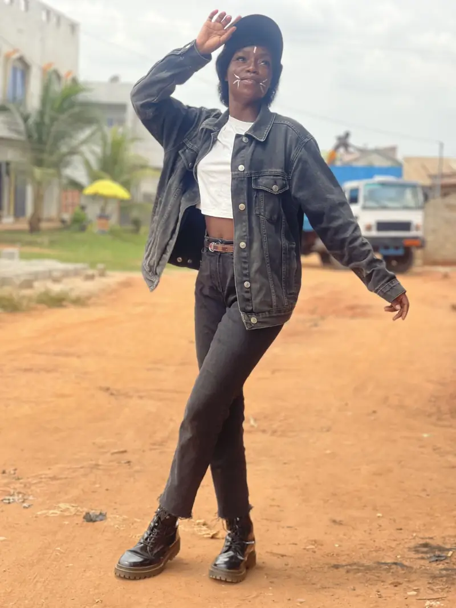
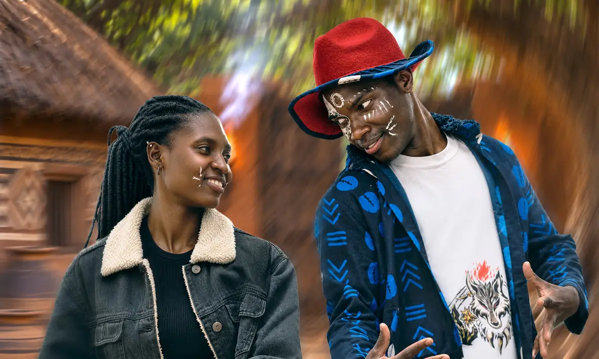
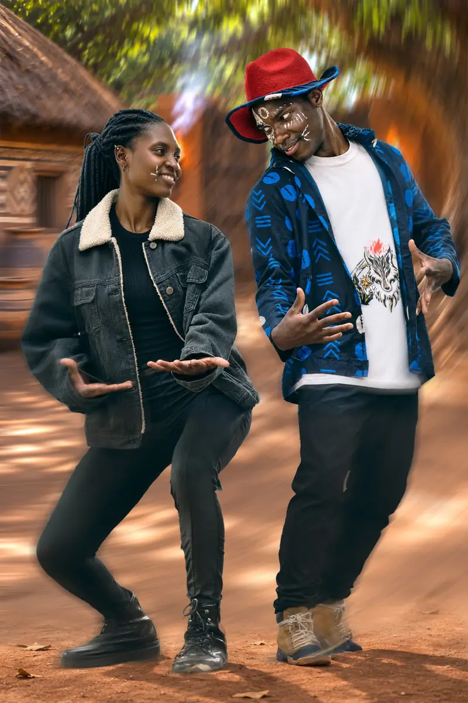
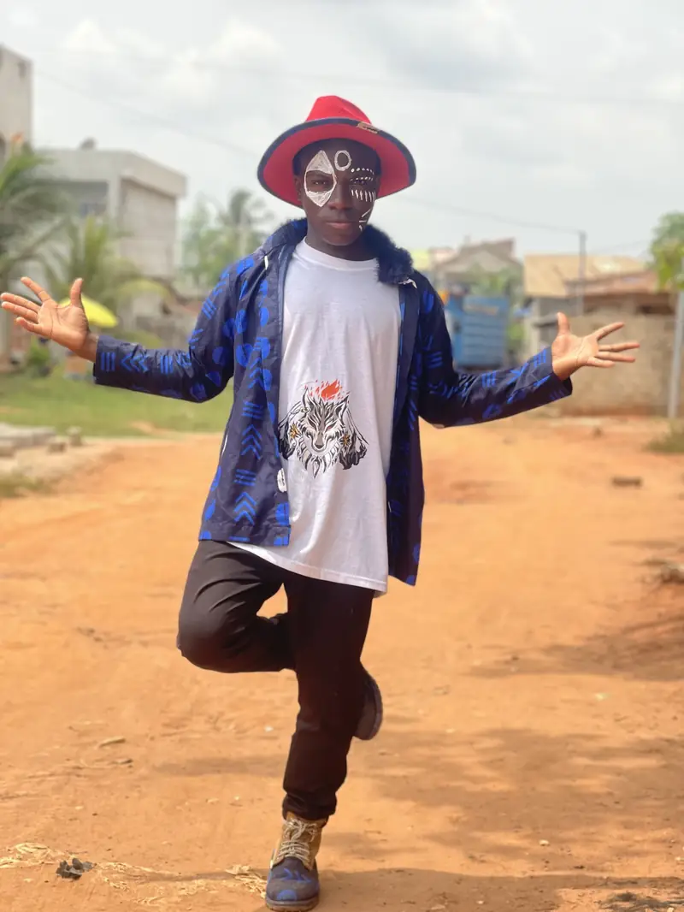

Oct 25, 2026

“A story heard from far away loses some of its footsteps.”
Zambezi-Mara is an African fantasy entertainment universe built around original cinematic stories of action, dance, supernatural power, relationships, and moral conflict.
Here, strength matters.What a person chooses to do with it matters more.
Meet the CharactersZambezi-Mara begins with people before power.
Strength, authority, care, and power can all matter.
What gives them meaning is the judgment of the person using them.
The supernatural can change what a person is able to do.
It does not make the choice for them.
01 / 03

World
Zambezi-Mara is rooted in African-inspired fantasy. That influence lives in movement, costume, music, environment and visual language—but the stories, characters and fictional world belong to Zambezi-Mara. The world is not built simply to look different. It is built to give its people somewhere worth protecting, somewhere worth losing, and somewhere their choices can leave a mark.
Explore the WorldA good intention does not make every action good.
Power can change what is possible.
It does not erase responsibility.
Zambezi-Mara follows the space between who someone believes they are and what their choices begin to reveal.
Not all darkness enters with a roar.
Sometimes it asks for one more step.
The cinematic stories of Zambezi-Mara will live here as they are released.
Until then, begin with the people whose choices will shape them.
Meet the CharactersJournal
Uncover ancient traditions, legendary warriors, and stories worth telling.

Oct 25, 2026

Oct 25, 2026
Meet the people who will choose where it leads.